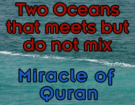

")

دنیا میں کسی "میٹھے" پانی والے سمندر کا وجود نہیں ہے۔ قرآن نے میٹھے اور کھاری سمندر والی خرافات پچھلی تہذیبوں کی دیو مالائی کہانیوں سے نقل کی ہے جس کے مطابق زمین کے نیچے ایک میٹھے پانی کا سمندر ہے جس سے دریا، اور جھیلیں اور ندیاں میٹھا پانی لیتی ہیں۔ اور زمین کے نیچے موجود یہ میٹھے پانی کا سمندر اور زمین کے اردگرد موجود کھارے پانی کا سمندر ایک دوسرے سے اس لیے نہیں ملتے کیونکہ اللہ نے ان کے درمیان ایک آڑ رکھی ہوئی ہے۔
(قرآن 25:53) وَہُوَالَّذِيْ مَرَجَ الْبَحْرَيْنِ ھٰذَا عَذْبٌ فُرَاتٌ وَّھٰذَا مِلْحٌ اُجَاجٌ وَجَعَلَ بَيْنَہُمَا بَرْزَخًا وَّحِجْرًا مَّحْجُوْرً
ترجمہ:اور وہی تو ہے جس نے دو سمندروں کو ملا رکھا ہے جن میں سے ایک کا پانی میٹھا ہے اور دوسرے کا کھاری۔ پھر ان کے درمیان ایک پردہ اور سخت آڑ کھڑی کر دی ہے۔
مگر دنیا کوئی سمندر بھی “میٹھے” پانی پر مبنی نہیں۔ اس لیے مسلمانوں کا عظیم مفسر طبری بھی حیران و پریشان ہو کر لکھتا ہے:” میں نے کسی سمندر کو میٹھا نہیں پایا بلکہ صرف دریا میٹھے ہوتے ہیں (حوالہ: تفسیر در منثور، آیت 25:53)
چنانچہ مسلمان پہلے یہ بتائیں کہ اس تصویر میں میٹھے پانی والا سمندر کون سا ہے؟
محمد صاحب نے میٹھے سمندر والی دیومالائی کہانی پرانے قصے کہانیوں سے لی
یہ Sumerian اور Akkadian تہذیبوں کی ایک خرافاتی دیومالائی کہانی تھی جس کے مطابق Abzu نامی ایک میٹھے پانی کا سمندر ہے جو کہ ہماری زمین کے نیچے بہہ رہا ہے، اور دنیا کے میٹھے پانی کے تمام مصادر، یعنی ندیاں، چشمے، دریا اور کنویں وغیرہ اسی زیر زمین سمندر Abzu سے یہ میٹھا پانی حاصل کر رہے ہیں۔ جبکہ اس کہانی کے مطابق ہماری زمین کے اردگرد جو سمندر ہے، وہ کھارے پانی کا ہے۔ اور ان دونوں میٹھے اور کھاری سمندر کے درمیان میں ایک پردہ ہے جس کی وجہ سے وہ آپس میں نہیں ملتے۔
یہیں سے یہ خرافاتی کہانی یہودیوں کی بائیبل میں آئی جہاں Abzu نامی سمندر کو Tehom کا نام دے دیا گیا۔ دیکھئے Genesis 1:2 and 49:25 ۔ جس کے مطابق یہ زیرِ زمین Tehom نامی سمندر ہی تھا جہاں سے نوح کے طوفان کے دوران پانی ابلا تھا۔
Six days of Creation: Genesis 1:3–2:3
Seven Heavens according to Jews and Christians
(Psalms 11:4) The LORD’s throne is in heaven; (Matthew 5:34) But I say to you, do not swear at all: neither by heaven, for it is God’s throne;
(Genesis 1:2) The earth was formless and empty, and darkness covered the deep waters. And the Spirit of God was hovering over the surface of the waters.
(Genesis 1:6-8) Then God said, “Let there be a space between the waters, to separate the waters of the heavens from the waters of the earth.” Thus God made the firmament, and divided the waters which were under the firmament from the waters which were above the firmament; and it was so. And God called the firmament Heaven.
(Psalms 148:4) “Praise him, you highest heavens, and you waters above the heavens!”
It is also argued that other texts refer to places in heaven where rain, snow, and hail were in storage, from which they came down upon the earth (cf. Job 38:22).
(Job 38:22) “Have you entered the treasury of snow, Or have you seen the treasury of hail, Which I have reserved for a time of distress, For a day of war and battle?
Cambridge Bible Commentary:22. the treasures] That is, the treasuries, the magazines. Snow and hail are represented as having been created and laid up in great storehouses in the heavens or above them, from whence God draws them forth for the moral ends of His government (Job 38:23).
(Psalm 135:7) He it is who makes the clouds rise at the end of the earth, who makes lightnings for the rain and brings forth the wind from his storehouses.
(Isaiah 55:10) “For as the rain and the snow come down from heaven and do not return there but water the earth, making it bring forth and sprout, giving seed to the sower and bread to the eater,
(Deuteronomy 28:12) The Lord will open to you his good treasury, the heavens, to give the rain to your land in its season and to bless all the work of your hands
(Psalm 135:7) He it is who makes the clouds rise at the end of the earth, who makes lightnings for the rain and brings forth the wind from his storehouses.
مسلمانوں کا بہانہ:”مرج البحرین” سے مراد ایک کھاری سمندر اور ایک میٹھے دریا کا ملاپ ہے
یہ بہانہ کیسے قابل قبول ہو سکتا ہے جب کہ قرآن صاف طور پر لفظ “مرج البحرین” ( دو سمندروں کا ملاپ) استعمال کر رہا ہے۔لفظ بحرین جمع ہے بحر کی جس کا مطلب ہے سمندر۔ اس لیے آپ کے طبری جیسے مفسرین بھی پریشان ہیں، اور تمام مسلمان ہی عرصہ دراز سے دو کھاری سمندروں کو آپس میں ملاتے چلے آ رہے ہیں (جیسا کہ اوپر کی تصویر میں موجود ہے)۔
تفصیلی آرٹیکل:
مسلمان ذیل کی 2 آیات پیش کر کے کہتے ہیں کہ یہ قرآن کا سائنسی معجزہ ہے:
(قرآن 25:53) وَہُوَالَّذِيْ مَرَجَ الْبَحْرَيْنِ ھٰذَا عَذْبٌ فُرَاتٌ وَّھٰذَا مِلْحٌ اُجَاجٌ وَجَعَلَ بَيْنَہُمَا بَرْزَخًا وَّحِجْرًا مَّحْجُوْرً
ترجمہ:
اور وہی تو ہے جس نے دو سمندروں کو ملا رکھا ہے جن میں سے ایک کا پانی میٹھا ہے اور دوسرے کا کھاری۔ پھر ان کے درمیان ایک پردہ اور سخت آڑ کھڑی کر دی ہے۔
(سورۃ 55، آیت 19 تا 20) مَرَجَ الْبَحْرَیْنِ یَلْتَقِیٰنِ . بَیْنَھُمَا بَرْزَخ لَّا یَبْغِیٰنِ
ترجمہ:
اس نے دو سمندر رواں کیے جو باہم ملتے ہیں (پھر بھی )ان کے درمیان ایک پردہ ہے،وہ اپنی حد سے تجاوز نہیں کر سکتے۔
اس کے معجزہ ہونے کی دلیل مسلمان یہ دیتے ہیں کہ:
۰ پیغمبر جس علاقے میں رہتے تھے، وہاں پر ایسے سمندر نہیں تھے۔ چنانچہ اس چیز کی خبر دینا غیب کی خبر دینے کے برابر ہے۔
۰ دوسرا یہ کہ قرآن کا بیان کرنا کہ اللہ نے ان دونوں سمندروں میں آڑ بنا رکھی ہے، یہ "سائنسی معجزہ" ہے
پھر مسلمان دو سمندروں کے ملنے کی یہ تصویر دکھاتے ہیں:
جبکہ حقیقت یہ ہے کہ محمد کو زمین پر موجود ان دو کم کھاری اور زیادہ کھاری سمندروں کا علم نہیں تھا اور نہ ہی وہ ان دو سمندروں کی بات قرآن میں بیان کر رہے ہیں (یاد رہے یہ دونوں سمندر کھاری ہیں، جبکہ قرآن کے مطابق ان میں سے ایک میٹھے پانی کا اور دوسرا کھارے پانی کا ہے)۔
بلکہ محمد نے قرآن میں جن دو سمندروں کی بات کی ہے، وہ قدیم دیومالائی کہانیوں والے 2 سمندر ہیں، جن میں سے ایک زمین کے نیچے موجود ہے اور وہ میٹھے پانی کا سمندر ہے اور تمام دریاوؤں اور جھیلوں کو میٹھا پانی یہی سمندر مہیا کر رہا ہے۔ جبکہ زمین کے اردگرد کھارے پانی کا سمندر ہے۔
پیغمبر نے میٹھے اور کھارے پانی کے سمندروں کا نظریہ قدیم دیومالائی قصوں سے لیا
یہ Sumerian اور Akkadian تہذیبوں کی ایک خرافاتی دیومالائی کہانی تھی جس کے مطابق Abzu نامی ایک میٹھے پانی کا سمندر ہے جو کہ ہماری زمین کے نیچے بہہ رہا ہے، اور دنیا کے میٹھے پانی کے تمام مصادر، یعنی ندیاں، چشمے، دریا اور کنویں وغیرہ اسی زیر زمین میٹھے پانی کے سمند Abzu سے یہ میٹھا پانی حاصل کر رہے ہیں۔ جبکہ اس کہانی کے مطابق ہماری زمین کے اردگرد جو سمندر ہے، وہ کھارے پانی کا ہے۔ اور ان دونوں میٹھے اور کھاری سمندر کے درمیان میں ایک پردہ ہے جس کی وجہ سے وہ آپس میں نہیں ملتے۔
یہیں سے یہ خرافاتی کہانی یہودیوں کی بائیبل میں آئی جہاں Abzu نامی سمندر کو Tehom کا نام دے دیا گیا۔ دیکھئے Genesis 49:25 جو کہہ رہی ہے:
"blessings of the heavens above, and Tehom lying beneath"
اس Tehom کا مزید ذکر Genesis 1:2 میں یوں موجود ہے۔
https://en.wikipedia.org/wiki/Tehom
Tehom is first mentioned in Genesis 1:2, where it is translated as "deep":
And the earth was without form, and void; and darkness was upon the face of the deep. And the Spirit of God moved upon the face of the waters.— King James version
It was from here that the waters of Noah's flood had their origin[1]
ایک اور تیسرے سمند کا بھی یہاں ذکر ہوتا ہے جو کہ تمام بارشوں اور اس میں آنے والے میٹھے پانی کا سبب ہے۔ یہ تیسرا سمندر آسمانوں کے اوپر بہہ رہا ہے۔ Genesis میں تخلیق کی کہانی کے وقت اس تیسرے آسمانی سمندر کا ذکر موجود ہے۔ پچھلے دور کے لوگوں کو علم نہیں تھا کہ زمین کا پانی کیسے evaporate ہو کر بادل بنتا ہے جس سے بارش ہوتی ہے۔ چنانچہ انہوں نے غلط عقیدہ گھڑ لیا تھا کہ آسمان میں بھی ایک سمندر ہے جو کہ میٹھے پانی کا ہے اور بارش کے وقت سارا پانی اس آسمانی سمندر سے آتا ہے۔
یہیں سے یہ اسلامی دعویٰ بھی نکلا ہے کہ اللہ کا عرش پانی پر قائم ہے۔
چنانچہ محمد ان قرآنی آیات میں انہیں 2 سمندروں کے دیومالائی قصے کو دہرا رہے ہیں جن میں سے ایک زیر زمین میٹھے پانی کا سمندر ہے، جبکہ دوسرا وہ جس نے زمین کو گھیرا ہوا ہے اور وہ کھارے پانی کا سمندر ہے۔ اس بات کی گواہی خود قرآن دے رہا ہے جب وہ اوپر بیان کردہ 2 آیات میں دعویٰ کر رہا ہے کہ ان دونوں سمندروں کا میٹھا اور کھاری پانی کبھی اپنی حد سے تجاوز کرتے ہوئے نہیں ملتے کیونکہ اللہ نے ان کے درمیان ایک پردہ اور سخت روک حائل کر دی ہے۔
جبکہ کچھ صحابہ اس سے مراد آسمان میں بہنے والا میٹھے پانی کا سمندر لے رہے ہوتے تھے.
تفسیر قرطبی آیت 25:53 (لنک):
وقال ابن عباس وابن جبير: يعني بحر السماء وبحر الأرض. قال ابن عباس: يلتقيان في كل عام وبينهما برزخ قضاء من قضائه. { وَحِجْراً مَّحْجُوراً } حراماً محرّماً أن يعذب هذا الملح بالعذب، أو يملح هذا العذب بالملح.
ترجمہ:
صحابی ابن عباس اور ابن جبیر نے کہا : مراد آسمان اور زمین کا سمندر ہے ۔ صحابی ابن عباس نے کہا : (یلتقیان) یعنی وہ آپس میں ملتے ہیں اور ان کے درمیا ن اس کی قضاء کا پردہ حائل ہے ۔ ان پر قطعی حرام ہے کہ یہ اپنی مٹھاس کے ذریعہ اس نمکین کو میٹھا کر دے اور اس میٹھے کو نمکین کے ساتھ نمکین کر دے ۔
یہی چیز بائیبل میں یوں بیان ہوئی ہے۔
(Psalm 135:7) He it is who makes the clouds rise at the end of the earth, who makes lightnings for the rain and brings forth the wind from his storehouses.
تفسیر در منثور، آیت 25:53 (لنک):
وأخرج ابن أبي حاتم عن الحسن في قوله { مرج البحرين } قال: بحر في السماء وبحر في الأرض
ترجمہ:
ابن ابی حاتم نے حسن بصری رحمۃ اللہ علیہ سے روایت کیا کہ آیت ’’ مرج البحرین ‘‘ سے مراد ہے ایک سمندر آسمان میں اور ایک سمندر زمین میں۔
چنانچہ یہاں سے ساری حقیقت واضح ہو جاتی ہے کہ یہ عجیب و غریب اور غلط سائنس پر مبنی آیات کو نازل کرواتے ہوئے پیغمبر کے دماغ میں کونسی دیو مالائی کہانیاں چل رہی تھیں۔
بائیبل میں بھی کاسمولوجی کا ماڈل یہ تھا جس میں آسمان پر بھی سمندر تھا جہاں سے بارش کا میٹھا پانی زمین پر گرتا ہے:

اور یہ Sumerian کی کاسمولوجی ہے اور اس میں بھی آسمانوں کے اوپر میٹھے پانی کا سمند ہے جہاں سے بارش کا میٹھا پانی ٹپکتا ہے جب آسمان میں موجود در دروازے کھولے جاتے ہیں۔
اسی دیومالائی کہانی کا بیان قرآن کے مصنف (یعنی محمد) نے سورۃ مومنون میں بھی کر دیا:
(قرآن 23:18) وَأَنزَلْنَا مِنَ السَّمَاءِ مَاءً بِقَدَرٍ فَأَسْكَنَّاهُ فِي الْأَرْضِ ۖ وَإِنَّا عَلَىٰ ذَهَابٍ بِهِ لَقَادِرُونَ
ترجمہ:
اور آسمان سے ہم نے ٹھیک حساب کے مطابق ایک خاص مقدار میں پانی اتارا اور اس کو زمین میں ٹھیرا دیا ہم اُسے جس طرح چاہیں اس پانی کو غائب بھی کر سکتے ہیں۔
اس آیت میں قرآن کے مصنف (محمد) کے ان الفاظ پر غور کریں:"۔۔۔ اور ہم جسطرح چاہیں اس پانی کو غائب بھی کر سکتے ہیں"۔
مسئلہ یہ تھا کہ قرآن کے مصنف کے مطابق اسی آسمانی سمندر سے طوفانِ نوح کے وقت پانی برسا تھا، اور اسی آسمانی سمندر سے بارش کے وقت بھی میٹھا پانی برستا ہے، چنانچہ سوال پیدا ہو رہا تھا کہ پھر تو زمین کو مکمل طور پر زیرِ آب آ جانا چاہیے۔ اس لیے مجبوراً محمد کو اللہ کی قدرت کے نام پر آسمانی سمندر سے برسنے والے اس میٹھے پانی کو "غائب" بھی کروانا پڑ گیا۔
بائیبل نے بھی آسمان کے سمندر سے بارش کے پانی کا گرنا بیان کر دیا تھا۔ چنانچہ وہاں بھی سوال اٹھ رہا تھا کہ کیا پانی پھر زمین پر آ کر غائب ہو جاتا ہے، یا پھر واپس آسمان میں چلا جاتا ہے؟ بائیبل نے یہ پانی غائب نہیں کروایا، بلکہ صرف یہ دعویٰ کر دیا کہ یہ پانی پلٹ کر آسمان میں نہیں جاتا ہے۔
(Isaiah 55:10) “For as the rain and the snow come down from heaven and do not return there but water the earth, making it bring forth and sprout, giving seed to the sower and bread to the eater,
اسی طرح قرآن کے مصنف (یعنی محمد) نے یہی بلنڈر اس وقت بھی کیا جب حدیث بیان کرتے وقت یہ دیو مالائی شیخی بگھار دی کہ زمین پر بہنے والا دریائے نیل اور دریائے فرات کے پانی کا ماخذ جنت میں موجود بہت بڑے بیری کے درخت (سدرۃ المنتہی) کی جڑ ہے۔
صحیح بخاری، کتاب مناقب الانصار (لنک):
۔۔۔ (محمد کہتے ہیں کہ معراج کی راج مجھے ساتویں آسمان کے بعد) پھر سدرۃالمنتہیٰ کو میرے سامنے کر دیا گیا (سدرۃ المنتہی بیری کا درخت ہے)۔ میں نے دیکھا کہ اس بیری کے درخت کے پھل مقام حجر کے مٹکوں کی طرح بڑے بڑے تھے اور اس کے پتے ہاتھیوں کے کان کی طرح بڑے تھے ۔ جبرائیل علیہ السلام نے فرمایا کہ یہ سدرۃالمنتہیٰ ہے ۔ وہاں میں نے چار دریا دیکھے دو باطنی اور دو ظاہری ۔ میں نے پوچھا اے جبرائیل علیہ السلام ! یہ کیا ہیں ؟ انہوں نے بتایا کہ جو دوباطنی دریا ہیں وہ جنت سے تعلق رکھتے ہیں اور دوظاہری دریا نیل اور فرات ہیں (جو سدرۃ المنتہیٰ یعنی بیری کی درخت کی جڑ سے نکلتے ہیں)۔
چنانچہ قرآن کے مصنف کے گلے پھر یہ سوال پڑ گیا تھا کہ جب مسلسل آسمان والے سمندر اور سدرۃ المنتہی (بیری کے درخت) سے پانی زمین پر آ رہا ہے، تو پھر زمین زیر آب کیوں نہیں آ جاتی؟
اس سوال سے اپنی گردن بچانے کی خاطر پھر قرآن کے مصنف کو قرآن میں یہ قصہ گھڑنا پڑا کہ وہ جس طرح چاہے اس پانی کو غائب بھی کر دیتا ہے۔
اس غلط قرآنی سائنس کے برخلاف:
٭ پانی آسمان سے نازل ہی نہیں ہوا ہے بلکہ وہ زمین پر موجود پانی ہی کے آبی بخارات اور پھر ان سے بادل بننے کی وجہ سے برستا ہے
٭ اور نہ ہی اس پانی کو غائپ کیا جا سکتا ہے۔ بلکہ وہ ہمیشہ زمین پر موجود رہتا ہے اور صرف پانی اور بخارات اور بادل میں شکلیں بدلتا رہتا ہے۔
اور احادیث میں بھی آسمان کے اوپر پانی کے عظیم دریاوؤں کا ذکر ملتا ہے:
صحیح بخاری، کتاب مناقب الانصار (لنک):
۔۔۔ (محمد کہتے ہیں کہ معراج کی راج مجھے ساتویں آسمان کے بعد) پھر سدرۃالمنتہیٰ کو میرے سامنے کر دیا گیا (سدرۃ المنتہی بیری کا درخت ہے)۔ میں نے دیکھا کہ اس بیری کے درخت کے پھل مقام حجر کے مٹکوں کی طرح بڑے بڑے تھے اور اس کے پتے ہاتھیوں کے کان کی طرح بڑے تھے ۔ جبرائیل علیہ السلام نے فرمایا کہ یہ سدرۃالمنتہیٰ ہے ۔ وہاں میں نے چار دریا دیکھے دو باطنی اور دو ظاہری ۔ میں نے پوچھا اے جبرائیل علیہ السلام ! یہ کیا ہیں ؟ انہوں نے بتایا کہ جو دوباطنی دریا ہیں وہ جنت سے تعلق رکھتے ہیں اور دوظاہری دریا نیل اور فرات ہیں (جو سدرۃ المنتہیٰ یعنی بیری کی درخت کی جڑ سے نکلتے ہیں)۔
آج کے مسلمان کے پاس اس سوال کا کوئی جواب نہیں کہ کیسے نیل اور فرات کا پانی کیسے سدرۃ المنتہی سے زمین پر آتا ہے، لیکن پرانے زمانے کی جاہلیت کی وجہ سے ہر مسلمان کا یہ ہی عقیدہ تھا کہ نیل و فرات کا پانی سدرۃ المنتہی سے آ رہا ہے۔
صحیح مسلم، کتاب الجنۃ (لنک):
رسول اللہ صلی اللہ علیہ وسلم نے فرمایا سیحان اور جیحان اور فرات اور نیل یہ سب جنت کے دریاوؤں میں سے ہیں۔
سنن ابو داؤد، سنت کا بیان (لنک):
احنف بن قیس، حضرت ابن عباس رضی اللہ تعالیٰ عنہما سے روایت کرتے ہیں کہ انہوں نے فرمایا کہ میں بطحاء میں ایک جماعت کے ساتھ تھا جس میں رسول اللہ صلی اللہ علیہ وآلہ وسلم بھی موجود تھے موجود تھا کہ ایک بادل کا ایک ٹکڑا گذرا آپ نے اس کی طرف دیکھا پھر فرمایا کہ تم اسے کیا نام دیتے ہو؟ لوگوں نے کہا کہ بادل آپ نے فرمایا کہ مزن کہا جی ہاں۔ آپ نے فرمایا کہ عنان بھی کہتے ہو کہا جی ہاں عنان بھی۔ امام ابوداؤد فرماتے ہیں کہ مجھے عنان کے بارے میں صحیح یقین نہیں ہے آپ نے فرمایا کہ کیا تم جانتے ہو کہ زمین و آسمان کے درمیان کتنی مسافت ہے؟ صحابہ کرام رضی اللہ عنہم نے عرض کیا کہ ہم نہیں جانتے آپ نے فرمایا کہ بیشک زمین و آسمان کے درمیان، اکہتر، یا بہتر، یا تہتر سال کی مسافت کا فاصلہ ہے پھر اس کے اوپر دوسرا آسمان بھی اتنے فاصلہ پر ہے یہاں تک کہ آپ نے ساتوں آسمان شمار فرمائے پھر ساتویں آسمان کے اوپر ایک دریا ہے جس کی تہہ اور سطح کے درمیان اتنا ہی فاصلہ ہے جتنا کہ ایک آسمان سے دوسرے آسمان تک فاصلہ ہے پھر اس کے اوپر آٹھ فرشتے (بصورت) بکروں ہیں جن کے کھروں اور پیٹھوں کے درمیان اتنا فاصلہ ہے جتنا کہ ایک آسمان سے دوسرے آسمان تک پھر ان کی پیٹھوں پر عرش الٰہی رکھا ہوا ہے جس کے اوپر اور نچلے کناروں کے درمیان ایک آسمان سے دوسرے آسمان تک کا فاصلہ ہے پھر اللہ اس عرش پر مستوی ہیں۔
پیغمبر کے دعوے میں مزید سائنسی غلطیاں:
قرآن کا یہ دعوی نہ تو 'غیب کی خبر' ہے اور نہ ہی سائنسی معجزہ ہے، بلکہ قرآن اور مسلمانوں نے یہاں سائنسی اور دوسری انتہائی فاش غلطیوں کا پہاڑ کھڑا کر رکھا ہے:
(1) پہلی غلطی یہ کہ دنیا میں کوئی کوئی 2 سمندر نہیں ہیں جہاں ایک کا پانی میٹھا ہو اور دوسرے کا کھارا ہو۔ مسلمانوں کا مشہور مفسر ابن جریر طبری بھی اس آیت کی تفسیر میں کہہ رہا ہے: میں نے کسی سمندر کو میٹھا نہیں پایا بلکہ صرف دریا میٹھے ہوتے ہیں (حوالہ: تفسیر در منثور، آیت 25:53)۔
(2) چنانچہ یہ دو سمندر مسلمانوں کے گلے میں اٹک گئے۔ اس لیے دھوکہ زندہ باد کا نعرہ لگاتے ہوئے مسلمانوں نے 'بحرین" کا ترجمہ کرنا شروع کر دیا 'ایک دریا' اور 'ایک سمندر' جبکہ یہ ترجمہ غلط ہیں کیونکہ آیت میں صاف صاف لفظ 'بحرین' استعمال ہوا جو کہ بحر کی جمع ہے، اور بحر کا مطلب سمندر ہے۔ چنانچہ لفظ "بحرین" سے کبھی بھی ایک سمندر اور ایک دریا نہیں نکالے جا سکتے۔
(3) جدید سائنس بتلاتی ہے کہ دو سمندروں کے پانی جو آپس میں نہیں مل پا رہے ہوتے ہیں، اسکی وجہ ہے کہ دونوں سمندروں کے پانی میں کھاری پن، کثافت اور درجہ حرارت (Salinity, density and temperature) کا فرق ہوتا ہے۔
مگر قرآن کا مصنف تو ان سائنسی وجوہات (Salinity, density and temperature) سے مکمل طور پر لاعلم ہے اور وہ تو مکمل طور پر غلط سائنس بیان کر رہا ہے کہ ان کے درمیان اللہ نے پردہ حائل کیا ہوا ہے جس کی وجہ سے وہ نہیں مل رہے۔ تو مسلمان یہ بتلائیں کہ یہ دعوی کر دینا کہ خدا نے ان کے درمیان پردہ حائل کیا ہوا ہے، یہ کون سا 'سائنسی' معجزہ ہوا؟
(4) اگر فقط پیغمبر کا ان دو سمندروں کا ذکر کر دینا ہی معجزہ تھا، تو پھر یہ بات تو محمد سے ہزار سال قبل ہی ارسطو اپنی کتاب میں بیان کر چکا تھا۔ تو پھر آپ محمد اور قرآن کو چھوڑ دیجئے اور ان سے پہلے ارسطو پر اور اس کے معجزے پر ایمان لے آئیے۔ حقیقت یہ ہے کہ فقط اسے بیان کر دینا نہ ارسطو کا معجزہ تھا، اور نہ ہی محمد کا معجزہ ہے۔ جہاز رانوں کو اس کا مشاہدہ مستقل طور پر مختلف سمندروں میں ہوتا رہا۔ وہیں سے یہ باتیں لوگوں میں پھیل گئیں۔ چنانچہ اس چیز کا بیان کر دینا دور دور تک کوئی معجزہ نہیں۔
(5) اور ارسطو نے ہزار سال قبل ہی درست سائنسی وجہ بیان کرتے ہوئے لکھا:
“The drinkable, sweet water, then, is light and is all of it drawn up: the salt water is heavy and remains behind,” Meteorology Book 2 Chapter 2
ارسطو کی یہ وضاحت سائنسی اعتبار سے قرآن کی وضاحت سے ہزاروں گنا بہتر ہے جو سائنس کے نام پر یہ بتا رہا ہے کہ اللہ نے ان میٹھے اور کھارے پانی کے سمندروں کے درمیان پردہ حائل کیا ہوا ہے۔
(6) اور قرآن کی اگلی سائنسی غلطی یہ ہے جب وہ دعویٰ کر رہا ہے کہ ان دو سمندروں کا پانی 'کبھی' آپس میں نہیں ملتا ہے (دیکھئے اوپر کی 2 آیات جہاں قران کہہ رہا ہے کہ ان دونوں کے مابین سخت پردہ حائل ہے اور وہ کبھی اپنی حد سے تجاوز نہیں کرتے)۔ جبکہ سائنسی حقیقت یہ ہے کہ دونوں سمندروں کا پانی صرف عارضی طور پر ایک دوسرے سے جدا رہتا ہے، لیکن تھوڑی دیر بعد وہ مستقل طور پر ایک دوسرے میں ضم ہو جاتا ہے۔
مذہب کا لوگوں کو بے وقوف بنانا:
پرانے وقتوں کے لوگوں کو نہ salinity کا پتا ہوتا تھا ، نہ درجہ حرارت کا اور نہ ہی density کا۔ پتا تو خود محمد/اللہ کو بھی نہیں تھا، لیکن ان پرانے وقتوں کے لوگوں کو بے وقوف بناتے ہوئے ان پر اپنی دھاک بٹھانے کے لیے دعویٰ کر دیا ہے کہ یہ دونوں سمندروں کا پانی اس لیے نہیں مل رہا کیونکہ اللہ نے ان کے درمیان ایک پردہ بنا دیا ہے۔ اور وہ پرانے وقتوں کے معصوم لوگ بے چارے سائنسی علم کی کمی کی وجہ سے اس دھوکے کا شکار ہو جاتے تھے اور ماننا شروع کر دیتے تھے کہ واقعی کو مافوق الفطرت طاقت ہے جو ان دو سمندروں کو ملنے سے روک رہی ہے۔
یہ بالکل ایسے ہی ہے کہ پرانے زمانے کے لوگوں کو زلزلے آنے کی وجوہات معلوم نہیں تھیں، چنانچہ قرآن کے خالق نے انہیں بے وقوف بناتے ہوئے دعویٰ کر دیا کہ یہ اللہ ہے جو کہ زلزلہ بھیجتا ہے ان قوم والوں پر کہ جنہیں اسے عذاب سے تباہ کرنا ہوتا ہے۔ چنانچہ یہاں بھی پرانے وقتوں کے لوگ اپنے کم سائنسی علم کی وجہ سے اس دھوکے کا شکار ہو گئے اور زلزلوں کا اللہ کا عذاب سمجھ کر اس سے ڈرنا شروع ہو گئے۔
مسلمان عذر خواہوں کا بہانہ: آیت 25:53 میں دریا کا میٹھا پانی مراد ہے
چونکہ کوئی سمندر ایسا ہے ہی نہیں کہ جس کا پانی میٹھا ہو، چنانچہ مسلمانوں نے بہانہ بنانا شروع کر دیا کہ:
۰ آیت 25:53 میں میٹھے پانی کا دریا مراد ہے۔
۰ مزید انہوں نے کہا کہ یہ قرآن کا معجزہ ہے کہ کہ جب وہ دو سمندروں کے پانی کے ملنے کا ذکر کرتا ہے (سورۃ 55، آیت 19 تا 20) تو وہاں دونوں سمندروں کے درمیان صر ف ایک پردے (عربی: برزخ) کا ذکر کرتا ہے۔ لیکن جب جب ایک دریا اور ایک سمندر کے ملنے کا ذکر کرتا ہے (آیت 25:53) تو وہ ایک پردے اور سخت آڑ کا ذکر کرتا ہے (عربی: بَرْزَخًا وَّحِجْرًا مَّحْجُوْرًا)۔ جدید سائنس نے ثابت کر دیا ہے کہ دو سمندروں کے پانی کے ملنے اور دریا/سمندر کے پانی ملنے میں فرق ہوتا ہے، اور یہ ہی قرآنی معجزہ ہے۔
جواب:
یہاں مسلمانوں نےکھلا دھوکا دینا شروع کر دیا ہے:
۰ قرآن میں صاف صاف لفظ "بحرین" مراد ہے۔ بحر کے معنی سمندر کے ہیں، جبکہ 'بحرین' کا مطلب ہے 2 سمندر۔ یہ صریح بددیانتی ہے کہ 'بحرین' کا ترجمہ 'ایک دریا اور ایک سمندر' کر دیا جائے۔ نہ قرآن نے کبھی دریا کہا، نہ رسول نے کبھی دریا کہا، نہ صحابہ نے کبھی دریا کہا، نہ تابعین نے کبھی دریا کہا۔ یہ تو سمندر کہتے رہے، لیکن مسلمانوں نے اس غلط سائنس سے تنگ آ کر خود ہی قرآن میں معنوی تحریف کرتے ہوئے بحرین سے ایک دریا اور ایک سمندر نکال لیے۔
۰ اور دونوں آیات میں پردے سے حاصل ہونے والے نتائج ایک ہی ہیں اور آڑ سے کوئی Extra فرق نہیں پڑ رہا ہے۔ دو سمندروں کے ملنے والی آیت میں بھی قرآن یہ ہی دعویٰ کر رہا ہے کہ اس پردے کی وجہ وہ اپنی حد سے تجاوز نہیں کر سکتے: "(سورۃ 55، آیت 19 تا 20) اس نے دو سمندر رواں کیے جو باہم ملتے ہیں (پھر بھی )ان کے درمیان ایک پردہ ہے،وہ اپنی حد سے تجاوز نہیں کر سکتے۔"
۰ ابن عباس اور ابن جبیر اور حسن بصری جیسے صحابہ و تابعین کہہ رہے ہیں کہ اس سے مراد دو سمندر ہیں۔
۰ اور جب دریا اور سمندر کے پانی آپس میں ملتے ہیں، تو ان میں کوئی پردہ یا کوئی سخت آڑ نہیں ہوتی، بلکہ پہلے دونوں پانیوں کا Mixture پہلے ان کے درمیان پیدا ہوتا ہے (جسے کبھی بھی پردہ یا سخت آڑ نہیں کہا جاتا)، اور پھر یہ عارضی mixture بھی کچھ دیر کے بعد ختم ہو جاتا ہے اور دونوں پانی مستقل طور پر ایک دوسرے میں ضم ہو جاتے ہیں۔
۰ اور قرآن دریا کے حوالے سے بھی غلط سائنسی دعوی کر رہا ہے کہ ان میں پردے اور سخت آڑ کی وجہ سے پانی نہیں ملتے۔ جبکہ حقیقت یہ ہے کہ تھوڑی دیر بعد یہ پردہ اور آڑ مکمل طور پر ختم ہو جاتی ہے اور دونوں پانی آپس میں مکمل طور پر ضم ہو جاتے ہیں۔
مذہب کی اب کون کون سی سائنسی غلطیوں اور دیو مالائی کہانیوں پر مسلمان پردے ڈالیں گے؟